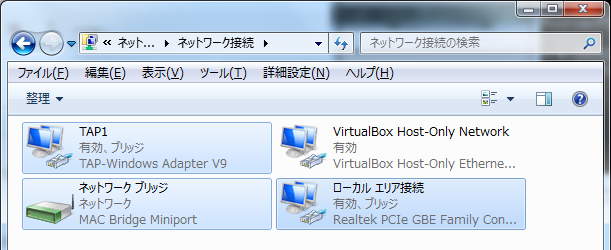

TAP-Win32とは？
Unix系OSで使用できる仮想ネットワークアダプタをWindowsで使用できるようにしたものです。 Windows版のOpenVPNに含まれています。
TAP-Win32をインストールするには？
OpenVPNのパッケージに含まれるTAP-Win32を入手してインストールしてください。 インストーラで簡単にインストールできるようになっています。 必要となるのは「TAP Virtual Ethernet Adapter」のみなので、OpenVPNの本体などをインストールする必要はありません（カスタムインストールでチェックを外してください）。
TAPデバイスを外部ネットワークに接続するには？
TAP-Win32をインストールするとケーブル未接続のアダプタ（TAPアダプタ）が出現しますので、それと外部ネットワークに接続できるアダプタをブリッジ接続してください。 デフォルトのアダプタ名はローカルエリア接続などになっていますが、分かりやすいようにTAP1のような名前に変更すると便利です。

TAPデバイスを使用するには？
Network optionのTAP device nameでTAPアダプタを選択してください。